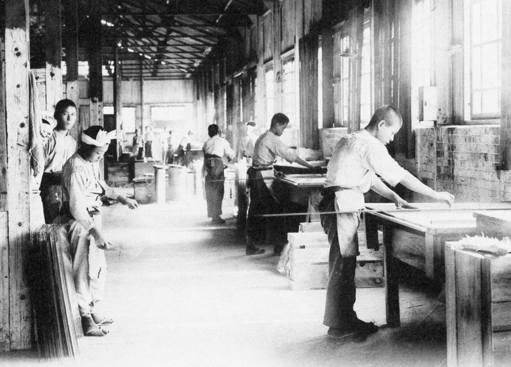
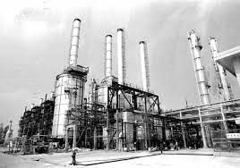

1960 年代，發展重點轉而為發展勞動 密集之出口導向產業，以利用台灣低廉 的勞力，並拓展國際市場。為此，政府 積極改革外匯與租稅制度，制定「獎勵 投資條例」，並於 1966 年設立台灣第 一個加工出口區。在世界經濟蓬勃發展 的帶動下，台灣出口快速增加，逐漸成 為經濟成長的發動機。

1960 年代末期，出口快速擴張，帶動 對機器設備與中間原料的需求；經過多 年的工業化之後，台灣產業技術更為先 進，有利於較高層次的基礎與重工業發 展。為此，1970 年代，政府積極推動 「十大建設」，除充實鐵路、機場、港 口、電力等基礎建設外，並積極發展石 化、鋼鐵等進口中間財替代產業與資本 密集產業。在此種策略的運用下，台灣 有效降低對國外中間財供應的依賴，促 進產業快速升級。
